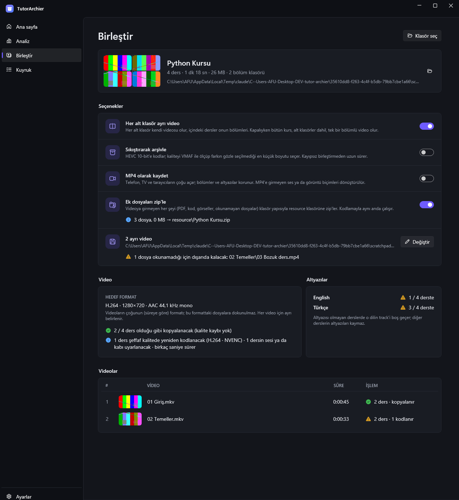
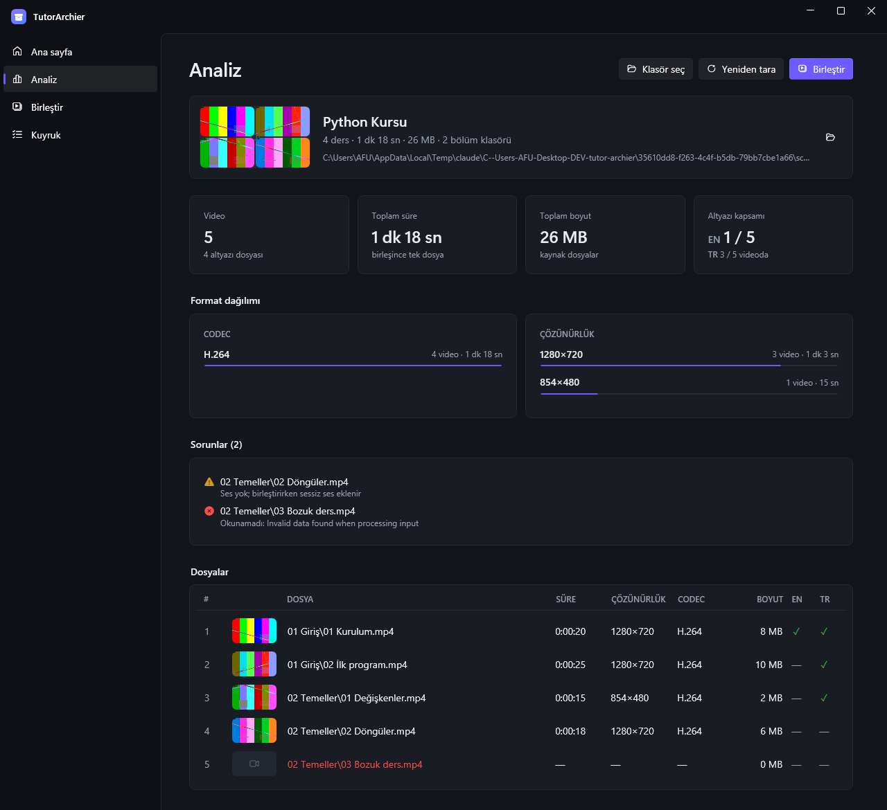
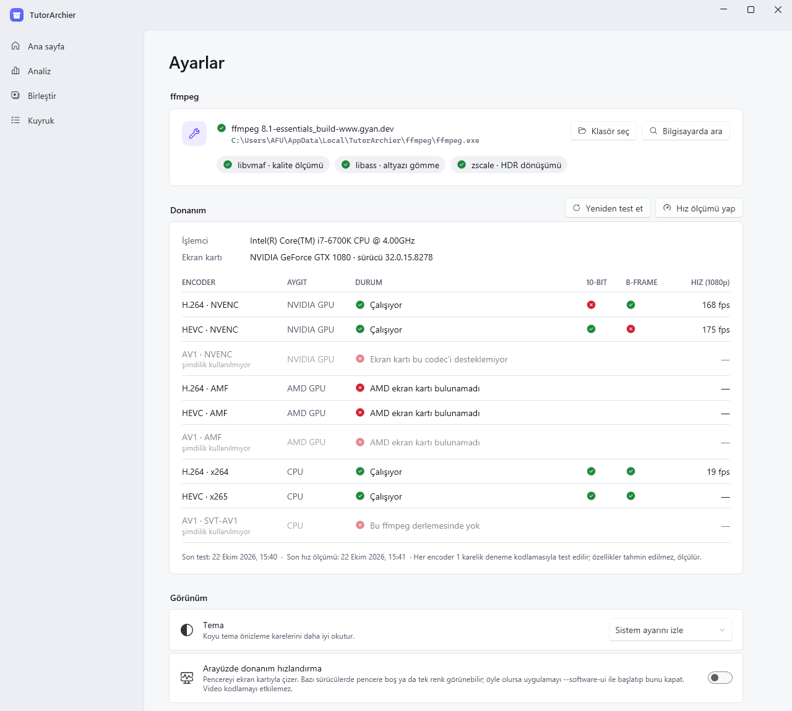

TutorArchier
Ders ders inmiş bir video kursunu, her dersin bir bölüm olduğu altyazılı tek bir MKV ya da MP4'te toplar. İsterseniz gözle fark edilmeyecek kalitede çok daha küçük bir HEVC arşivine çevirir.

Ne yapar?
- AnalizKlasördeki her videoyu okur; süre, boyut, codec ve çözünürlük dağılımını, altyazı kapsamını, okunamayan ya da sesi olmayan dosyaları gösterir. Aynı klasör ikinci kez çok daha hızlı açılır.
- Kayıpsız birleştirmeAynı formattaki dersler yeniden kodlanmadan birleşir. Farklı olanlar yalnızca gerektiği kadar işlenir: önce yeniden paketleme, gerekirse yalnızca ses, en son görüntü. Sesi olmayan derslere sessiz ses eklenir, sesli derslerin sesi hiçbir zaman atılmaz.
- Bölümler ve altyazılarHer ders dosya adıyla bir bölüm olur. Aynı dildeki altyazılar tek bir track'te toplanır ve dersin başlangıcına kaydırılır.
- Sıkıştırarak arşivlemeHEVC 10-bit'e kodlar, kaliteyi VMAF ile ölçer ve farkın seçilmediği en küçük boyutu bulur. Kuyruğa eklemeden önce tahmini boyutu görürsünüz.
- Her alt klasör ayrı videoBölüm klasörlerine ayrılmış kurslarda her klasör kendi videosu olur. Anahtar kapatılınca bütün kurs tek bir bölümlü video olur.
- MKV ya da MP4Varsayılan MKV. "MP4 olarak kaydet" ile telefon, TV ve tarayıcıların açtığı bölümlü bir MP4 çıkar; altyazılar MP4'ün metin altyazısına çevrilir.
- Ek dosyalarPDF, kaynak kod, görseller gibi videoya girmeyen her şey klasör yapısı korunarak bir zip'e konur.
- Kuyrukİşler sırayla çalışır, bir işin adımları paralel yürür (ekran kartıyla iki ders aynı anda kodlanır, zip yanında hazırlanır). Duraklatılan ya da uygulama kapanınca yarıda kalan iş kaldığı dersten devam eder. İlerleme görev çubuğunda görünür, pencere arkadayken iş bitince Windows bildirimi gelir.
- Donanım hızlandırmaNVIDIA (NVENC) ve AMD (AMF) kartlarını kendisi test eder, olmazsa işlemciye düşer.
Nasıl görünür?
Python Kursu\ Python Kursu (MKV)\
├── 01 Giriş\ ├── 01 Giriş.mkv ← 2 bölüm, eng + tur
│ ├── 01 Kurulum.mp4 └── 02 Temeller.mkv ← 2 bölüm, tur
│ ├── 01 Kurulum.en.srt
│ ├── 01 Kurulum.tr.srt
│ └── 02 İlk program.mp4
└── 02 Temeller\
├── 01 Değişkenler.mp4
└── 02 Döngüler.mkv


Kullanım
- Exe'yi indirip çalıştırın. İlk açılışta ekran kartı test edilir ve kısa bir hız ölçümü yapılır.
- Kurs klasörünü seçin (ya da klasörü exe'nin üzerine sürükleyin). Son açılan kurslar ana sayfada kalır.
- Birleştir ekranında seçenekleri ayarlayıp kuyruğa ekleyin.
Orijinal dosyalara hiçbir zaman yazılmaz.